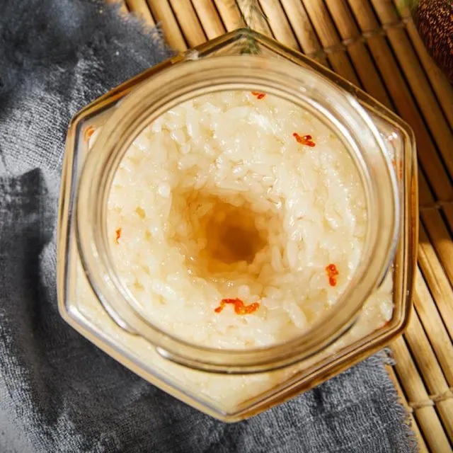

My first try of food making - 2022
Home
Learn more
Learn more about Chinese Rice Wine!
With many types of liquor to choose from, China is the birthplace of rice wine culture.
See Wikipedia for detailed introductions.
Chinese Rice wine is being used for drinks, medicine and also cooking ingredients. Making methods of Chinese Rice Wine is considerably simple.
You can refer to detailed steps to take when making Chinese Rice Wine here.
If I succeed this is what I'll get...💁
